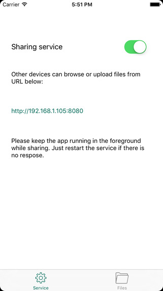
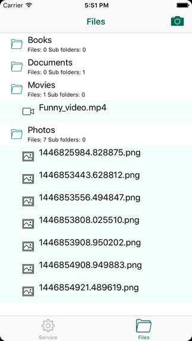
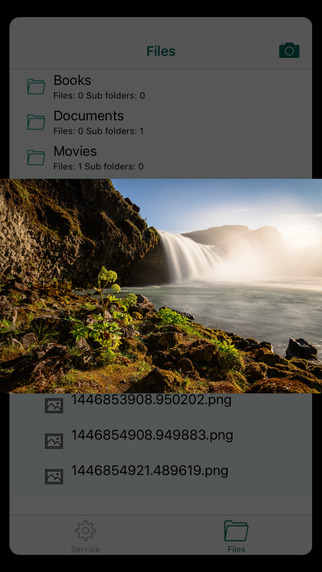

MarkDisk - Transfer and manage your files and documents with your phone
tags:Apps

Powerful tool to transfer and manage your files and documents with iPhone.
FEATURES
Transfer file though WIFI: You can transfer files between your phone and computer, without cable;
- Unlimited storage, given your phone storage is sufficient;
- View your documents/images on iPhone and web browser; Support different file formats;
- Play videos from your iPhone or web browsers;
- You can take photo or import photos;
- Support all iOS versions, from iOS7 to iOA9;


